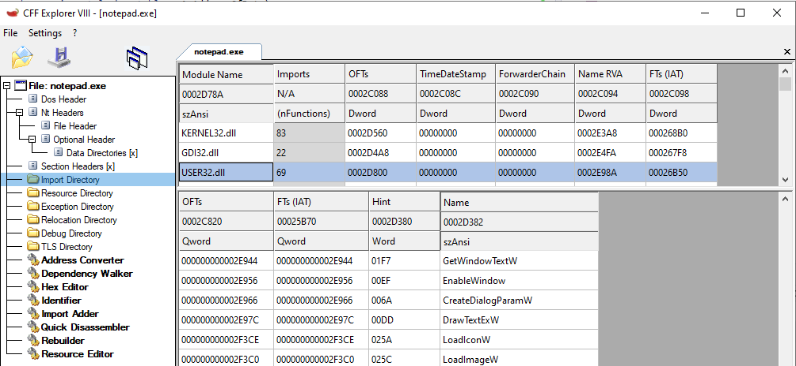
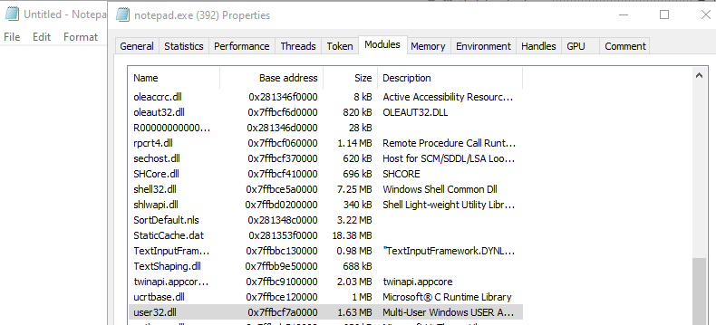
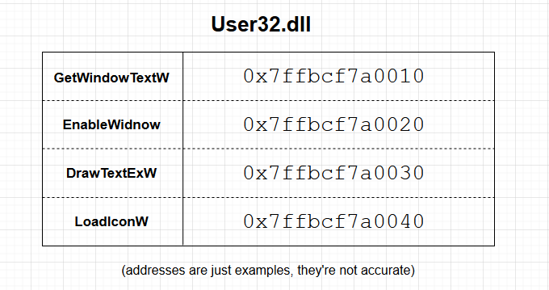
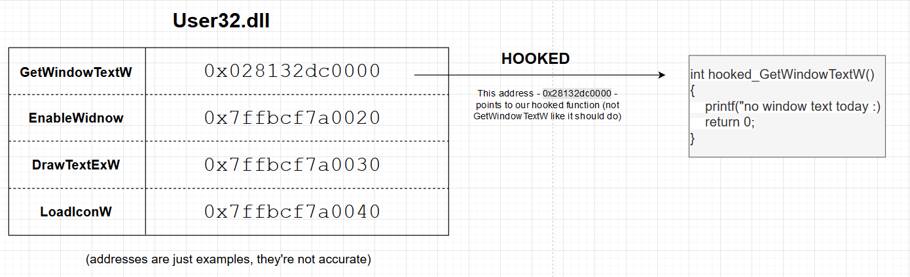

# Import Address Table (IAT) Hooking
•
https://relearex.wordpress.com/2017/12/26/hooking-series-part-i-import-address-table-hooking/•
https://www.ired.team/offensive-security/code-injection-process-injection/import-adress-table-iat-hooking#code•
http://bandido.ch/programming/Import_Address_Table_Hooking.pdf•
https://guidedhacking.com/threads/how-to-hook-import-address-table-iat-hooking.13555/Import Address Table (IAT) hooking is where you hook a function in a process by modifying its address in the Import Address Table.
e.g. you replace
MessageBoxA - 0x7ffbcf7a0010 with
MessageBoxA - 0x028132dc0000.
Now whenever the process calls
MessageBoxA it will jump to
0x028132dc0000 instead, which is the address of your hooked function.
For Import Address Table hooking to be useful, you typically write the hook in a DLL and inject the DLL into a target process.
Your DLL will then modify the Import Address Table of the target process, and any time that target process calls one of the functions you've hooked, your code will run.
Hooking the IAT of your own process isn't very useful, but this what most of the examples you will see online are.
## About the IAT
The Import Address Table (IAT) contains pointers to all the functions a PE file imports.
Here you can see
Notepad.exe's Import Directory.
 Notepad imports the modules (DLLs):
•
Kernel32.dll•
GDI32.dll•
USER32.dll• etc.
And specifically from the USER32.dll module shown above, it's imported the functions:
•
GetWindowTextW•
EnableWindow•
DrawTextExW•
LoadIconW• etc.
At runtime, when the Windows loader loads the Notepad.exe PE file and executes it,
it will load all those modules listed above (
Kernel32.dll,
User32.dll) into Notepad's address space and then locate the address of each of the functions it's importing from these modules (
GetWindowTextW,
EnableWindow, etc.).
Here we can that Notepad has the module
user32.dll loaded at
0x7ffbcf7a0000Around that address -
0x7ffbcf7a0000 - will be our User32.dll functions -
GetWindowTextW,
EnableWindow,
DrawTextExW, etc.
Therefore, after the Windows loader has loaded Notepad into memory and processed the Import Address Table, User32.dll in the Import Address Table might look like this:
## Hook the IAT
To hook the Import Address Table, we simply loop through it to find the function we want - e.g.
GetWindowTextW - and replace that function's address with the address of our own hooked function.
Now whenever
GetWindowTextW is called inside the target process, it will jump to
0x028132dc0000 - our hooked function,
instead of
0x7ffbcf7a0010 - the address of the original
GetWindowTextW.
The diagrams above are abstracted versions of what the Import Address Table actually looks like.
They help to explain the concept of IAT hooking, but aren't an accurate depiction of the IAT itself.
For an in-depth look at the Import Address Table, I have a section on the PE format which you can read.